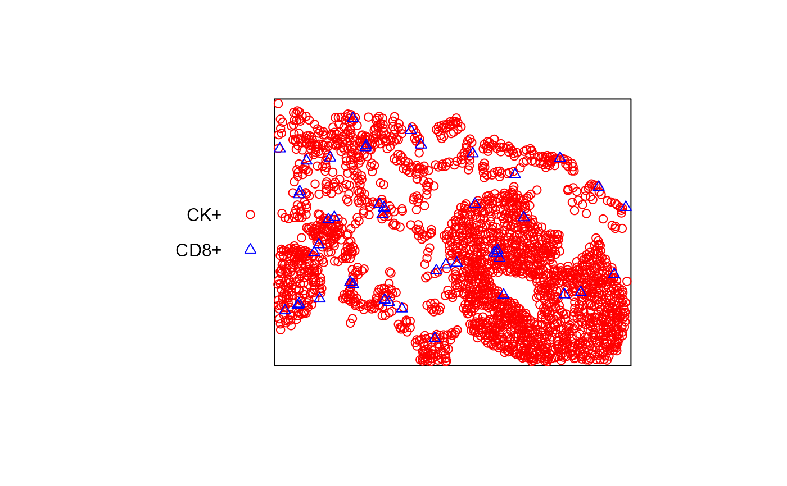

Makes a marked point pattern (spatstat::ppp) for the cells
of the specified phenotype in the
specified tissue categories and field.
make_ppp(csd, export_path, pheno, field_name = NULL, tissue_categories = NULL)
| csd | Cell seg data, may contain multiple fields |
|---|---|
| export_path | Path to a directory containing composite and component image files from inForm |
| pheno | Phenotype definition. Either a (possibly named) character
vector to be parsed by |
| field_name | Sample Name or Annotation ID for the field of interest.
May be omitted if |
| tissue_categories | Tissue categories of interest. If supplied, the
returned |
Returns a marked point pattern (spatstat::ppp object)
with a single mark value.
# ppp for CD8+ cells in the sample data suppressPackageStartupMessages(library(spatstat)) pp <- make_ppp(sample_cell_seg_data, sample_cell_seg_folder(), "CD8+", tissue_categories="Tumor")#> Warning: 6 points were rejected as lying outside the specified window#> Warning: 6 illegal points also plotted# To include multiple phenotypes in a single point pattern, # create them separately and join them with [spatstat::superimpose()]. pp2 <- make_ppp(sample_cell_seg_data, sample_cell_seg_folder(), "CK+", tissue_categories="Tumor")#> Warning: 13 points were rejected as lying outside the specified window